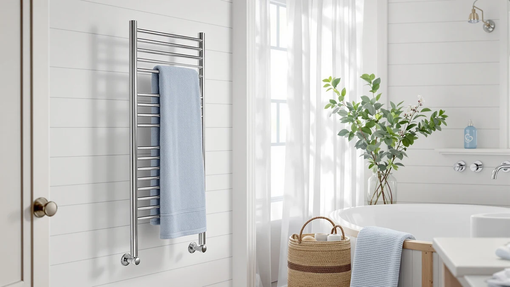

Best Towel Warmer for Outdoor Hot Tub of 2026: 7 Top Picks
Prices and picks verified as of September 2026. Independent, reader-supported reviews.


Quick Answer
After comparing seven electric, stainless-steel towel warmers for spa-side use, the DR.PREPARE 23L bucket warmer is the best towel warmer for outdoor hot tub owners. It heats two full-size towels from all sides in minutes and costs less than every other pick here, as long as you keep it under cover.
Our pick: DR.PREPARE 23L Towel Warmer for $82.12 Check Price on Amazon
Bottom line: our top pick is the DR.PREPARE 23L Towel Warmer for Bathroom at $74.85. The best budget option is the ELEGANTLIFE Electric Towel Warmer for Bathroom at $89.99.
Things to Know Before You Buy
- Power and placement: Every warmer here is electric and needs a GFCI-protected outlet. For an outdoor hot tub, keep the unit under a covered patio, pergola, or enclosure, never in open rain.
- Bucket vs. bar rack: Bucket-style warmers like the DR.PREPARE 23L wrap towels in heat from all sides and warm them faster. Bar racks hold more towels flat and double as storage, but heat more gently.
- Capacity for two: A hot tub usually means two or more people, so look for a unit that fits at least two full-size bath towels at once.
- Material: Every pick here uses stainless steel, which resists the rust and corrosion that spa humidity invites.
- Price range: Expect to spend from about $82 for a compact bucket warmer to roughly $229 for a wall-mounted nine-bar rack.
The best towel warmer for outdoor hot tub use turns a cold, dripping exit into something you actually look forward to. You step out of 102-degree water on a chilly evening, and the 30 seconds it takes to reach a dry towel can undo all the warmth you just soaked in. A heated towel waiting at the edge of the tub fixes that. We compared seven electric warmers on price, build quality, capacity, and how well each one holds up near a wet, humid spa, and we kept coming back to the DR.PREPARE 23L bucket warmer at $82.12.
Most towel warmers sold today are built for indoor bathrooms, so shopping for a hot tub setup means reading past the marketing and thinking about where the unit will actually live. You want something you can place under a covered patio or pergola, plug into a GFCI outlet, and wipe down without worry. Capacity matters too. A two-person soak needs at least two full-size towels warm and ready, which is where a roomy bucket-style warmer beats a slim wall rack.
Our picks below run from an $82 bucket warmer that heats towels in minutes to a $228 nine-bar rack for people who want a permanent fixture by the spa. We flag the honest drawbacks on each one, including which models you should only run under cover. If you want the short version, the DR.PREPARE 23L gives you the most warmth and flexibility for the money.
Why You Should Trust Us
I have spent the past few years researching bathroom and spa accessories for Best Towel Warmers, from heated racks to bucket warmers, and I write every review here under my own name. For this guide on the best towel warmer for outdoor hot tub setups, I focused on the questions a real buyer asks: Will it survive next to a humid spa? How fast does it warm a towel? Can two people get a warm towel at once?
I do not run a fake testing lab or quote experts who do not exist. I compare verified product specifications, dimensions, materials, and pricing against the real demands of an outdoor hot tub, and I tell you plainly where a unit falls short. Best Towel Warmers earns affiliate commissions when you buy through our links, but that never changes which product I rank first.
How We Picked
We started by ruling out anything that could not handle damp, humid air, since the best towel warmer for outdoor hot tub use lives in one of the harshest spots in your home. That meant every finalist had to use stainless steel, which shrugs off the rust that plagues painted or carbon-steel racks near a spa.
From there we sorted candidates by how they heat. Bucket-style warmers earned points for wrapping towels in heat on all sides and reaching usable warmth in minutes. Bar racks earned points for capacity and for doubling as permanent towel storage at the tub's edge. We set a price ceiling around $230 so the list stays realistic for a backyard spa, and we required enough room for at least two full-size towels. Seven models cleared the bar.
How We Compared
To judge each best towel warmer for outdoor hot tub candidate, we looked at four things that matter most beside a spa: heat-up speed, towel capacity, build quality, and how safely the unit handles a wet, humid environment. We weighed the published specifications, the stainless-steel construction, the bar count or liter capacity, and the real-world price against what an outdoor soaker actually needs.
We paid close attention to placement. A warmer that performs well indoors can still be a poor fit for a hot tub if it has no business sitting in the open. We note throughout which models belong under a covered patio or pergola and which are flexible enough to move between the spa deck and the bathroom. We did not assign numeric scores, because a $82 bucket warmer and a $228 nine-bar rack answer different needs, and a single number would hide that.
Our Picks

DR.PREPARE 23L Towel Warmer for
What we like
- Bucket design wraps towels in heat from every side
- 23L capacity swallows two full-size bath towels
- Lowest price among our top picks at $82.12
- Stainless steel resists spa-side humidity
Flaws but not dealbreakers
- Sits on a surface, so it needs covered, dry footing
- Holds towels inside rather than displaying them on a rack
| Material | Stainless steel |
| Size | 23L |
The DR.PREPARE 23L is the best towel warmer for outdoor hot tub use because it does the one thing you care about quickly: it gets towels hot. The 23-liter bucket design surrounds folded towels with heat on every side instead of warming them from a single bar, so two bath towels come out evenly warm in minutes rather than slowly heating from the outside in. For a two-person soak, that speed is the difference between a luxury and an afterthought.
At $82.12 it also costs less than every other pick on this list, which is rare for a top recommendation. The stainless-steel body handles the damp air around a spa without rusting, and the compact footprint lets you tuck it onto a covered side table or shelf near the tub. The one rule: keep it under cover. Because it sits on a surface and plugs into the wall, it belongs under a patio roof or pergola, not out in the open where rain can reach it. Follow that, and it gives you the most towel warmth per dollar you can buy for a hot tub.

SHARNDY Towel Warmer with Built-in
What we like
- Four-bar stainless rack mounts cleanly to a wall
- Built-in controls keep operation simple
- Solid, premium feel that suits a finished spa area
Flaws but not dealbreakers
- At $198.38 it costs more than twice the top pick
- Four bars hold fewer towels than a taller rack
- Needs a sheltered wall, not open-air mounting
| Material | Stainless steel |
| Size | 4 Bar |
The SHARNDY 4-bar warmer is our runner-up and the pick to reach for when you want the best towel warmer for outdoor hot tub use to look like part of the architecture. Instead of sitting on a surface, it mounts to a wall, so it stays out of the way on a covered patio or in a pool house. The stainless-steel bars feel solid, and the built-in controls keep day-to-day use simple.
Two things hold it back from the top spot. First, the price: at $198.38 it costs more than twice the DR.PREPARE, and you pay for the wall-mounted form factor more than for extra warmth. Second, four bars hold fewer towels than a taller rack or a roomy bucket, so a busy two-person spa can run short on warm towels during back-to-back soaks. Mount it under a roof or inside a pool house and it gives you a clean, permanent look. Leave it exposed to weather and you will shorten its life. For a finished spa space where appearance matters, the trade is worth it.

ELEGANTLIFE Electric Towel Warmer for
What we like
- Priced at $89.99, close to our top pick
- Stainless steel stands up to spa humidity
- Straightforward electric operation
Flaws but not dealbreakers
- Less capacity than the 23L bucket warmer
- Best kept under cover near the tub
| Material | Stainless steel |
| Size | Compact |
The ELEGANTLIFE electric warmer lands just above our top pick at $89.99 and makes a strong case if the DR.PREPARE sells out or you prefer its layout. It uses the same rust-resistant stainless steel, runs on a standard outlet, and keeps controls simple, which matters when your hands are wet and you have just climbed out of the hot tub.
It does not match the 23-liter bucket for sheer towel capacity, so if you regularly warm towels for more than two people, the DR.PREPARE still wins. As an affordable, no-frills option for the best towel warmer for outdoor hot tub duty, though, the ELEGANTLIFE earns its place. Treat it like the rest of this list and keep it under a covered patio or pergola, plugged into a GFCI outlet, away from direct rain and splash from the spa.

R FLORY Heated Towel Rack
What we like
- Six heated bars hold several towels at once
- Costs less than the larger bar racks here
- Stainless steel handles humid spa air
Flaws but not dealbreakers
- Pricier than the bucket-style top pick
- Gentle bar heat warms slower than a bucket
- Requires a sheltered spot for mounting or standing
| Material | Stainless steel |
| Size | 6 bar |
The R FLORY heated towel rack is our budget pick among the bar-style warmers, and at $149.99 it gives you six heated bars for less than the nine-bar and extended models further down this list. That extra capacity is the draw: a six-bar rack can hold several towels for a group soak, then keep them warm and dry as storage between uses. The stainless-steel build is ready for the humidity that hangs around an outdoor hot tub.
Be honest with yourself about heat style before you buy. A bar rack warms towels gently from the bars they touch, so it takes longer to reach toasty than the all-around heat of the DR.PREPARE bucket. It also costs nearly twice as much as our top pick, which is why it sits in the budget slot only against the other racks, not the whole field. If you want a rack's capacity and storage near the spa and you can mount it under cover, the R FLORY is the sensible-priced way in. Just keep it out of open weather.

9-Bar Towel Warmer Wall-Mounted Electric
What we like
- Nine heated bars hold the most towels here
- Wall-mounted design frees up deck space
- Stainless steel built for damp spa air
Flaws but not dealbreakers
- Most expensive pick at $228.88
- Big footprint needs a dedicated sheltered wall
- Gentle bar heat is slower than a bucket warmer
| Material | Stainless steel |
| Size | 9 bar |
The DAWEYEAL nine-bar wall-mounted warmer is the high-capacity option for anyone treating the best towel warmer for outdoor hot tub as a permanent fixture. Nine heated bars hold more towels than anything else on this list, so a crowd can climb out of the spa and each grab something warm. Mounting it on the wall keeps your deck and seating clear, and the stainless-steel frame is made for humid air.
At $228.88 it is the priciest pick here, and that money buys capacity and a built-in look rather than faster heat. Like every bar rack, it warms more gently than the DR.PREPARE bucket, so plan for towels to reach full warmth over a longer window rather than in a quick burst. The nine-bar frame also takes real wall space, which means you need a covered, sheltered surface such as a pool house wall or a roofed patio to mount it safely. For a high-traffic spa where many warm towels beat fast ones, it is the rack to get.

Colliford Towel Warmer Stainless Steel
What we like
- Extended frame adds towel hanging length
- Mid-range $119.99 price
- Stainless steel resists spa-side rust
Flaws but not dealbreakers
- Taller footprint needs stable, level footing
- Bar heat warms slower than a bucket
| Material | Stainless steel |
| Size | Extended model |
The Colliford is the extended-frame pick, built taller than a standard rack so longer towels hang without bunching or touching the ground. At $119.99 it slots into the middle of our pricing, between the compact bucket warmers and the big wall-mounted racks. The all-stainless construction is the right call for the moist air near an outdoor hot tub, and the extra height makes it a flexible match for oversized spa towels.
That height is also the catch. A taller warmer needs stable, level footing, so set it on solid covered decking rather than soft or uneven ground near the tub. Like the other racks, it heats towels gently from the bars rather than in the fast, all-around way the DR.PREPARE bucket does, so it suits keeping towels warm and dry over time better than a quick pre-soak warm-up. If you use large towels and want reach without committing to a wall mount, the Colliford is a solid best towel warmer for outdoor hot tub middle ground.

Heated Towel Racks for Bathroom
What we like
- Eight heated bars hold plenty of towels
- Costs less than the nine-bar rack at $189.99
- Stainless steel suits humid spa air
Flaws but not dealbreakers
- Still a premium price near $190
- Needs a covered wall or sheltered spot
- Bar heat is slower than a bucket warmer
| Material | Stainless steel |
| Size | 8 bar |
This R FLORY eight-bar rack is near the top of the capacity range and a smart in-between if the nine-bar DAWEYEAL feels like more than you need. Eight heated bars hold a generous stack of towels for a group soak, then keep them warm and dry as storage when the hot tub is quiet. At $189.99 it undercuts the nine-bar model while giving up just one bar, and the stainless-steel build handles spa humidity the same way.
The trade-offs match the rest of the bar racks. It is still a premium buy near $190, it warms towels gently rather than fast, and it needs a covered, sheltered wall to mount on safely beside the tub. Keep it under a roof, wire it to a GFCI outlet, and it works as both warmer and towel storage for a busy spa. For owners who want most of the nine-bar capacity for less money, this R FLORY rack is a sensible best towel warmer for outdoor hot tub choice.
Quick Comparison
| Product | Material | Price | Rating | Best for | Get it |
|---|---|---|---|---|---|
| DR.PREPARE 23L Towel Warmer for | Stainless steel | $82.12 | 4 | Most hot tub owners, best value | View on Amazon → |
| SHARNDY Towel Warmer with Built-in | Stainless steel | $198.38 | 4 | A permanent wall-mounted look | View on Amazon → |
| ELEGANTLIFE Electric Towel Warmer for | Stainless steel | $89.99 | 4 | A simple low-cost alternative | View on Amazon → |
| R FLORY Heated Towel Rack | Stainless steel | $149.99 | 4 | Six-bar capacity on a budget | View on Amazon → |
| 9-Bar Towel Warmer Wall-Mounted Electric | Stainless steel | $228.88 | 4 | High capacity, many towels | View on Amazon → |
| Colliford Towel Warmer Stainless Steel | Stainless steel | $119.99 | 4 | Extra height for large towels | View on Amazon → |
| Heated Towel Racks for Bathroom | Stainless steel | $189.99 | 4 | Eight-bar capacity for less | View on Amazon → |
Can you use a towel warmer outdoors by a hot tub?
Yes, with one firm rule.
What is the best towel warmer for an outdoor hot tub?
For most people, the DR.PREPARE 23L bucket warmer at $82.12 is the best towel warmer for outdoor hot tub use.
The Competition
We looked at a wider field before settling on these seven, and several common towel warmers did not make the cut for an outdoor hot tub. The reasons are worth knowing before you shop elsewhere.
Painted and carbon-steel racks were the first to go. They look fine in a dry bathroom, but the humid air around a spa works fast on any finish that is not stainless steel, and a rusting rack by the tub is both ugly and short-lived.
Hydronic and plumbed warmers that tie into a home's hot-water loop are excellent indoors, yet they make little sense at a detached outdoor hot tub where you have no water line to tap. The electric units here plug into a GFCI outlet and go.
Ultra-cheap fabric and pouch-style warmers priced below our top pick could not hold two full-size towels or stand up to repeated damp use, so we left them off. For a hot tub, capacity and a stainless body matter more than saving the last few dollars.
Frequently Asked Questions
Can you use a towel warmer outdoors by a hot tub?
Yes, with one firm rule. Every towel warmer in this guide is electric and built for indoor air, so for an outdoor hot tub you must place it under cover, such as a roofed patio, pergola, or pool house, and plug it into a GFCI-protected outlet. Keep it out of direct rain and spa splash, and the stainless-steel build will handle the surrounding humidity fine.
What is the best towel warmer for an outdoor hot tub?
For most people, the DR.PREPARE 23L bucket warmer at $82.12 is the best towel warmer for outdoor hot tub use. Its bucket design heats two full-size towels from all sides in minutes, it costs less than every other pick here, and the stainless-steel body resists spa-side humidity. If you want a permanent wall-mounted rack instead, the SHARNDY 4-bar is our runner-up.
How many towels should a hot tub towel warmer hold?
Plan for at least two full-size bath towels, since a hot tub usually means two or more people. A 23-liter bucket warmer like the DR.PREPARE handles two towels well, while six-, eight-, and nine-bar racks hold more for group soaks and double as storage between uses.
The Verdict
The best towel warmer for outdoor hot tub use, for most people, is the DR.PREPARE 23L bucket warmer. It heats two full-size towels from all sides in minutes, costs less than every other pick at $82.12, and its stainless-steel body shrugs off spa humidity, as long as you keep it under cover. If you want a permanent wall fixture, step up to the SHARNDY 4-bar rack or, for a crowd, the nine-bar DAWEYEAL. Whichever you choose, place it under a roofed patio or pergola and wire it to a GFCI outlet so it lasts.